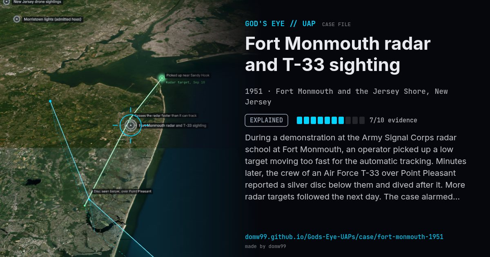

Fort Monmouth radar and T-33 sighting
EXPLAINED

During a demonstration at the Army Signal Corps radar school at Fort Monmouth, an operator picked up a low target moving too fast for the automatic tracking. Minutes later, the crew of an Air Force T-33 over Point Pleasant reported a silver disc below them and dived after it. More radar targets followed the next day. The case alarmed the Pentagon and led the Air Force to reorganise Project Grudge, which became Project Blue Book.
Explanation
Blue Book's record card: "Extensive investigation revealed that the target on 10 Sept was caused by a balloon. Targets on 11 September were attributed to anomalous propagation."
What was seen
Shape: Fast radar target; silver disc seen from a T-33
Witnesses: Army radar operators; two Air Force pilots
Duration: Two days
Sources
Browse
- United States
- 1950s
- Explained
- Radar-visual cases
- Official government documents
- Military witnesses
- Pilot and aircrew witnesses
- Radar tracking
- Discs and saucers